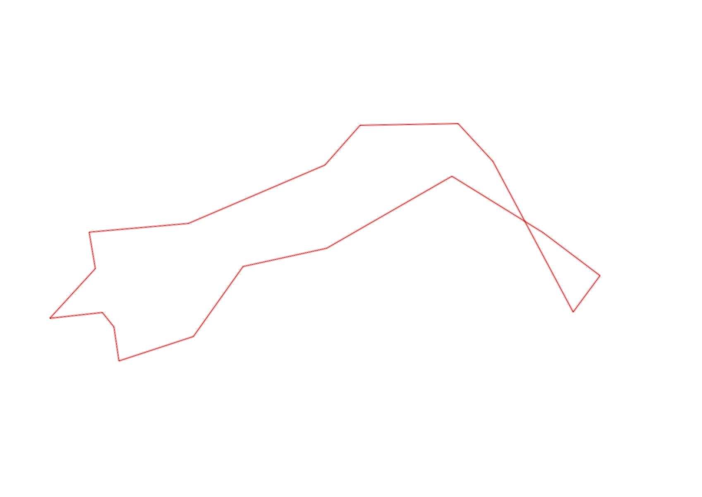
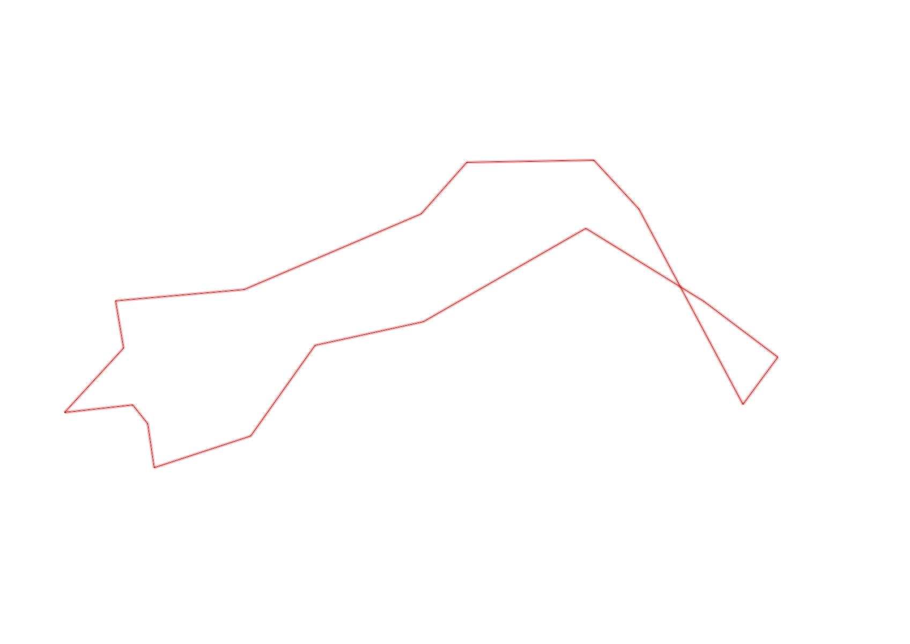

| Control |
Points |
Time Punched |
Distance |
Your Time |
Pace |
Place |
Fastest Time |
Median Time |
% Behind Fastest |
| 35 |
30 |
|
0.26 |
0:02:53 |
11:05 |
1 / 1 |
0:02:53 |
0:02:53 |
0% |
| 50 |
50 |
|
0.44 |
0:03:45 |
08:31 |
1 / 1 |
0:03:45 |
0:03:45 |
0% |
| 52 |
50 |
|
0.32 |
0:03:43 |
11:36 |
1 / 1 |
0:03:43 |
0:03:43 |
0% |
| 56 |
50 |
|
0.22 |
0:05:48 |
26:21 |
2 / 2 |
0:04:36 |
0:05:12 |
26% |
| 51 |
50 |
|
0.14 |
0:02:48 |
19:59 |
1 / 1 |
0:02:48 |
0:02:48 |
0% |
| 109 |
100 |
|
0.52 |
0:04:58 |
09:33 |
1 / 1 |
0:04:58 |
0:04:58 |
0% |
| 108 |
100 |
|
0.15 |
0:04:30 |
30:00 |
2 / 2 |
0:03:02 |
0:03:46 |
48% |
| 34 |
30 |
|
0.3 |
0:03:48 |
12:40 |
1 / 1 |
0:03:48 |
0:03:48 |
0% |
| 67 |
60 |
|
0.16 |
0:01:43 |
10:43 |
2 / 3 |
0:01:20 |
0:01:43 |
28% |
| 58 |
50 |
|
0.45 |
0:03:32 |
07:51 |
2 / 2 |
0:02:39 |
0:03:05 |
33% |
| 32 |
30 |
|
0.3 |
0:00:58 |
03:13 |
1 / 4 |
0:00:58 |
0:01:14 |
0% |
| 44 |
40 |
|
0.11 |
0:01:49 |
16:30 |
4 / 4 |
0:01:05 |
0:01:17 |
67% |
| 53 |
50 |
|
0.2 |
0:02:31 |
12:35 |
1 / 2 |
0:02:31 |
0:02:44 |
0% |
| 45 |
40 |
|
0.16 |
0:01:55 |
11:58 |
6 / 6 |
0:00:59 |
0:01:04 |
94% |
| 62 |
60 |
|
0.06 |
0:04:39 |
1:17:30 |
6 / 6 |
0:00:39 |
0:01:40 |
615% |
| 41 |
40 |
|
0.1 |
0:02:41 |
26:50 |
2 / 2 |
0:01:20 |
0:02:00 |
101% |
| 60 |
60 |
|
0.24 |
0:05:10 |
21:31 |
2 / 2 |
0:02:00 |
0:03:35 |
158% |
| Finish |
0 |
|
0.26 |
0:01:44 |
06:40 |
1 / 2 |
0:01:44 |
0:02:03 |
0% |
Total Distance Covered: 4.39km
Points Scored: 890
Late Penalty: 0
Final Score: 890
Total Time: 0hours 58minutes 55seconds
Efficiency: 202.73 points/km
 
